Designs interfaces that work
I’m a Multimedia Design graduate from Københavns ErhvervsAkademi(EK) with a focus on frontend development and UX/UI design. I specialize in building responsive, user-centered interfaces where clean code and thoughtful design work together. I’m driven by problem-solving and enjoy creating digital solutions that are both functional and visually refined.
I am currently seeking a full-time position where I can contribute as a frontend developer or UX/UI designer, working on real-world digital products. I’m motivated to collaborate with multidisciplinary teams, apply my skills in practice, and help create user-centered solutions that deliver real value.
As a newly graduated Multimedia Designer, I bring a fresh perspective, a positive approach, and creative ideas that can add value to your company. My background in frontend development ensures that I can contribute effectively to building engaging, functional, and user-friendly websites, while my UX/UI expertise allows me to enhance user experiences with well-structured and visually appealing designs.
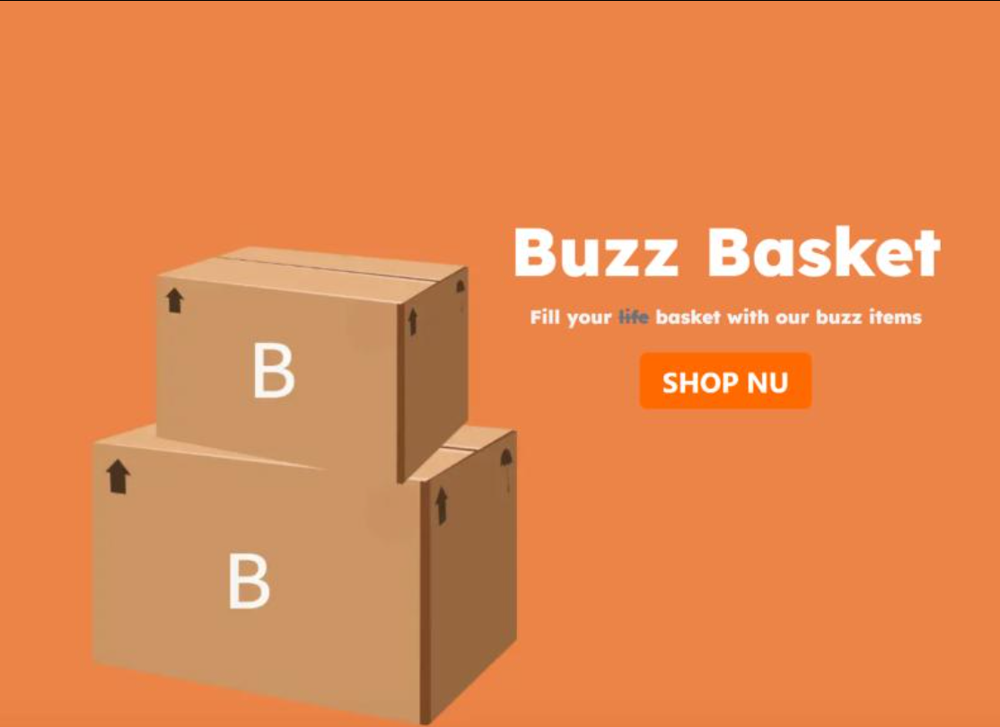
A modern webshop built with Next.js, Tailwind CSS, and JavaScript. The application fetches product data from a public API and uses Zustand for global state management, including cart functionality. The solution focuses on performance, scalability, and a clean, user-friendly interface.
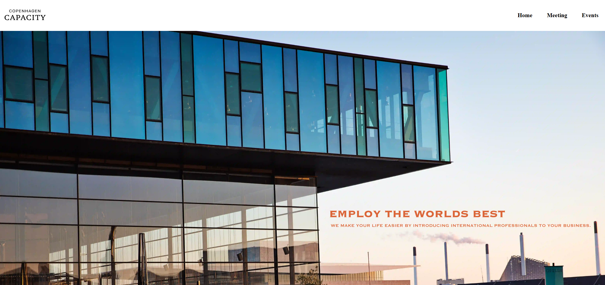
Redesigned the Copenhagen Capacity website based on UX/UI principles to attract a young target audience with improved clarity and user engagement. The site is more sustainable and lightweight, utilizing Lottie files, embedded codes, and WebP images to optimize performance. This was a collaborative group project.
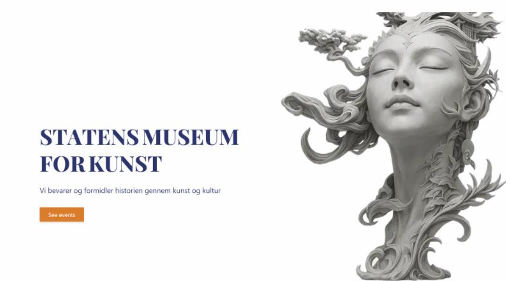
A curator management system developed with Next.js, focusing on performance and efficient API communication. The platform uses Clerk for authentication, where logged-in users act as curators who can create events and add artworks. Visitors without login access can only view the content.
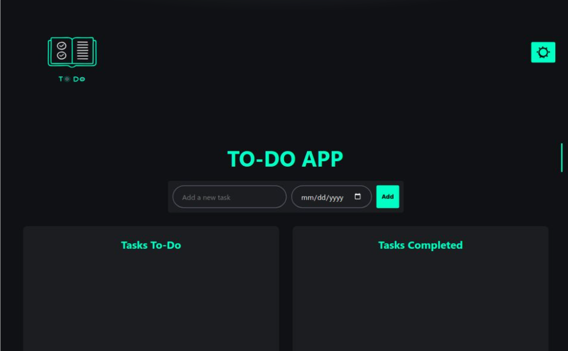
This is a To-Do app using basic JavaScript, with the purpose of allowing users to easily add, track, and manage their tasks. The app provides a simple and intuitive interface, where users can add tasks, mark them as completed, and prioritize them, helping them stay organized and productive.
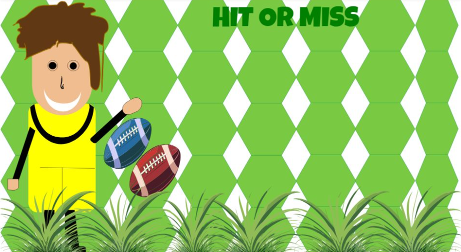
Hit or Miss is a fun game where players need to click on 5 blue rugby balls to win. The game is built using HTML, CSS, and JavaScript, offering a simple yet engaging experience.
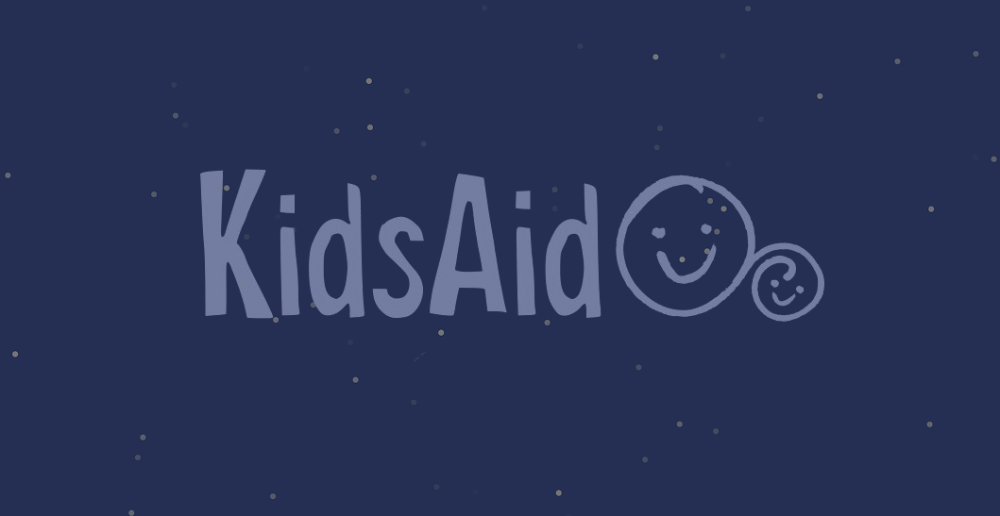
This is a one-page website for Kids Aid Clowns, designed to showcase the organization's concept and tagline. The page features a parallax scroll effect, engaging illustrations, and small animations, all built with UX/UI principles to create an eye-catching, interactive experience.
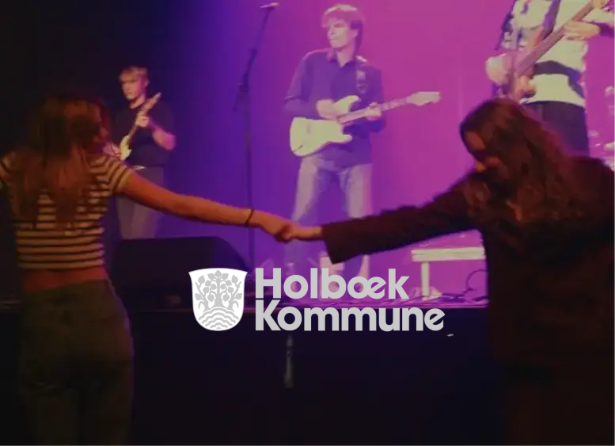
dynamically Data fetching from Supabase and used Astro to kode this project. The single view and lists of the artist is fetched by using api and the different pages by using map is dynamically generated of different artists.
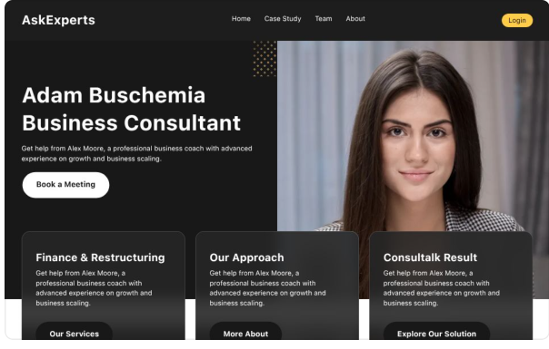
Ask Experts is a website built using Astro, a climate-friendly and highly optimized framework for modern web development. Astro enables the creation of fast, attractive, and static websites by shipping minimal JavaScript, resulting in excellent performance, accessibility, and energy efficiency.
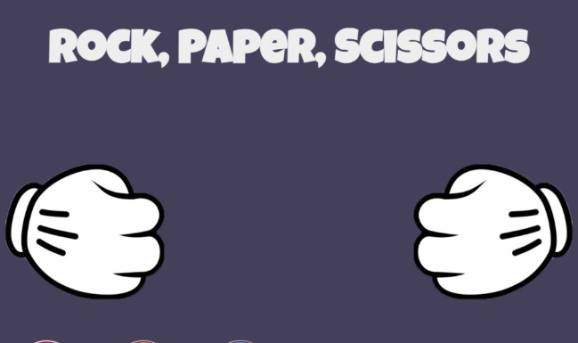
This fun game Rock Paper Scissors game is built by using JavaScript to learn and practice the logic of the language. The game lets users play against the computer, where the choices are randomly generated, and the winner is determined based on the classic rules.
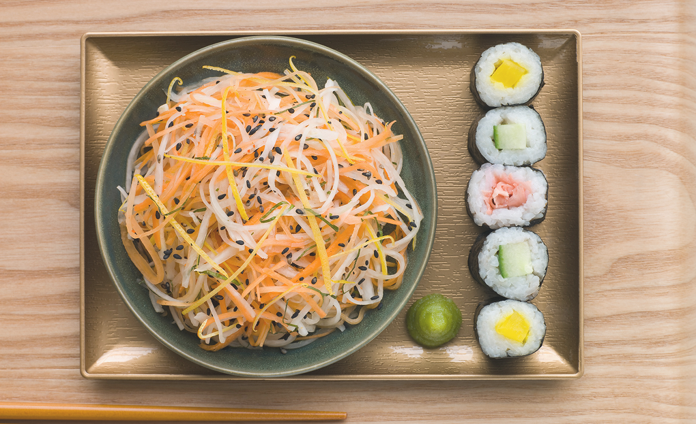
Sushi Master is a website for sushi lovers, offering DIY sushi recipes and showcasing the most authentic and popular sushi places in Copenhagen. Built with HTML, CSS, and JavaScript, it provides everything from sushi-making tips to local restaurant recommendations, making it the ultimate guide for sushi enthusiasts.
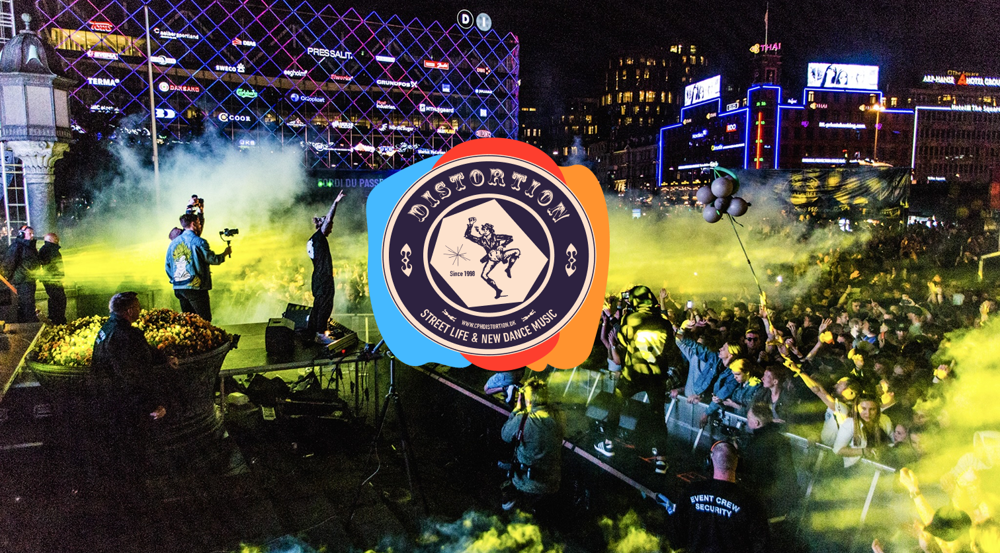
Conducted user research and testing to enhance website usability.Made wireframes, prototypes to find the best digital solution for our target audience remaining the authenticity of the brand and follows the design guide given by them.This was a group project.
Created a reusable design system and style tile for Coming Up, a volunteer organization under Holbæk Kommune, supporting youth life in Holbæk. The design reflects the organization's concept and essence, backed by thorough user research and testing for consistency across platforms. This was also a group project.
Created a reusable design system and style tile for Coming Up, a volunteer organization under Holbæk Kommune that supports youth life in Holbæk. The design reflects the organization's concept and essence, backed by thorough user research and testing to ensure consistency across platforms. This was a group project.
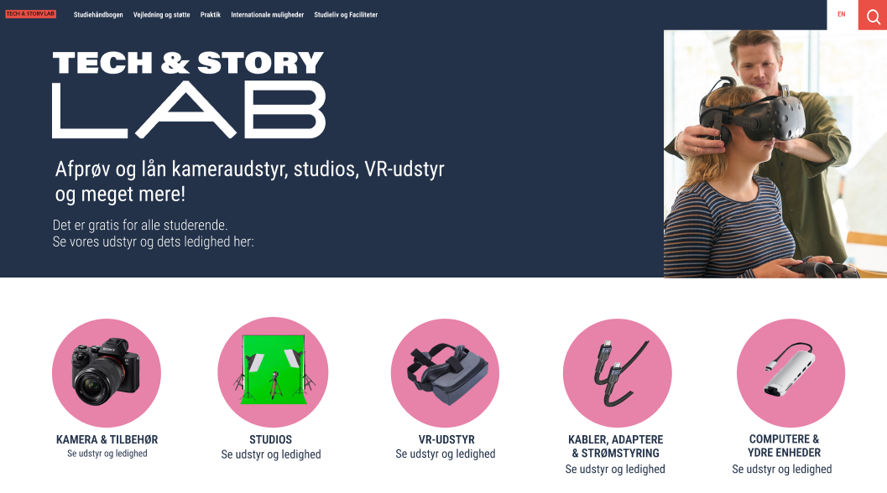
Redesigned the interface for EK Tech & Story Lab to enhance visual communication and functionality. Utilized card sorting and the Crazy 8s method to find the best solution while staying within the brand's visual identity and design guidelines. Conducted pre- and post-redesign testing to demonstrate improvements in accessibility, functionality, and usability. This was a group project.
Choose the CV that matches the role you're hiring for.
Got a project or role in mind? I'd love to hear it.